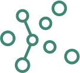
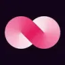
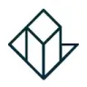

МолекулаАгрегаторы нейросетей
Молекула объединяет модели для текстов, изображений, видео и музыки. В одном аккаунте можно подобрать инструмент под этап работы, сохранить инструкции проекта и использовать готовые роли.
К задаче в МолекулеПоиск и анализ: Определите вопрос и допустимые источники. Проверяйте, поддерживают ли найденные материалы вывод ответа.
Сформулируйте узкий вопрос и требуемый тип источников. В Молекуле есть страница Perplexity для поиска; открывайте найденные материалы и проверяйте, подтверждают ли они конкретный вывод.
Найди первичные материалы о требованиях к маркировке упаковки выбранного товара. Укажи регион, дату документа и ссылки. Если применимость зависит от категории товара, отметь это.

Молекула объединяет модели для текстов, изображений, видео и музыки. В одном аккаунте можно подобрать инструмент под этап работы, сохранить инструкции проекта и использовать готовые роли.
К задаче в Молекуле
AgentGPT позволяет подготавливать собственных ИИ-агентов и задавать им имя и цель. В описании предусмотрено развёртывание и выполнение задач агентами. Пользователь связывает цель и выбранные задачи при подготовке сценария работы, задавая назначение помощника и рассматривая его последующее выполнение в рамках предоставленных инструментом возможностей.

Arena AI предлагает сравнение модельных ответов с участием посетителей. Её собственные результаты голосования относятся к правилам этой площадки и не являются оценками НейроРейтинга.

vLex (Vincent) используют для задачи: исследовать тему и разбирать найденную информацию. Ещё одно направление работы: готовить текст по теме и требованиям к содержанию.

Workik AI рассчитан на задачи, где нужно связывать действия в автоматизированный процесс. Ещё одно направление работы: исследовать тему и разбирать найденную информацию.

Writesonic связан с подготовкой контента и задачами его видимости в поиске. Рекомендации следует сопоставлять с содержанием страницы и реальными вопросами аудитории.

Agent Zero позволяет запускать агента в собственном рабочем окружении. До выполнения задачи нужно определить доступные инструменты и ограничить область его действий.

Albus AI организует исследование материалов в рабочем пространстве. Документы и другие сведения становятся контекстом, по которому можно продолжать разбор темы.

bundleIQ используют для задачи: разбирать содержимое документов. Ещё одно направление работы: исследовать тему и разбирать найденную информацию.
Elicit помогает искать научные работы, выделять сведения из публикаций и организовывать исследовательские материалы. Для полезного обзора сначала задайте вопрос и критерии отбора, затем сверяйте полученные выводы с методикой и ограничениями каждой статьи.
GeoSpy относится к инструментам, которые помогают исследовать тему и разбирать найденную информацию. Ещё одно направление работы: считывать текст с изображения.

LibreChat используют для задачи: исследовать тему и разбирать найденную информацию. Ещё одно направление работы: готовить ответы на обращения клиентов.

Surfer SEO объединяет инструменты для подготовки поискового контента и аудита страниц. В нём предусмотрены исследование запросов и рекомендации по работе с текстом. Обучающие материалы дополняют рабочие функции; результаты анализа помогают принимать редакционные решения, но сами по себе не подтверждают будущие позиции сайта.

TrendSpider используют для задачи: писать и изменять программный код. Ещё одно направление работы: исследовать тему и разбирать найденную информацию.

В инструменте «Visaver» можно собирать видеосцену по описанию или визуальному исходнику. Ещё одно направление работы: готовить видеоматериалы для публикации.

Dot рассчитан на задачи, где нужно исследовать тему и разбирать найденную информацию. Ещё одно направление работы: готовить ответы на обращения клиентов.

Glitching AI рассчитан на задачи, где нужно собирать видеосцену по описанию или визуальному исходнику. Ещё одно направление работы: исследовать тему и разбирать найденную информацию.

Imagga используют, чтобы собирать видеосцену по описанию или визуальному исходнику. Ещё одно направление работы: исследовать тему и разбирать найденную информацию.

Komo сочетает обычный поиск информации и генеративный ИИ в поисковой системе. Разговорный помощник дополняет рассмотрение запросов и результатов. Пользователь обращается к поисковым средствам вместе с ИИ-интерфейсом, связывая формулировку вопроса и работу с предоставленной информацией в рамках своего запроса.

Linkly AI рассчитан на задачи, где нужно исследовать тему и разбирать найденную информацию. Ещё одно направление работы: организовывать материалы и поиск по ним.

Magnifi рассчитан на задачи, где нужно исследовать тему и разбирать найденную информацию. Ещё одно направление работы: разбирать финансовые показатели и рыночные данные.

MarketMuse используют для задачи: исследовать тему и разбирать найденную информацию. Ещё одно направление работы: исследовать запросы и планировать содержание сайта.

Perplexity ищет сведения и собирает ответ с ссылками на найденные материалы. Сервис подходит для первичного исследования вопроса, сравнения условий и подготовки списка источников для проверки.

Seona AI относится к инструментам, которые помогают исследовать тему и разбирать найденную информацию. Ещё одно направление работы: подготавливать аналитические материалы для рабочих решений.

Veruna AI используют, чтобы получать изображения из словесного задания. Ещё одно направление работы: выполнять задачи с веб-страницами.

Futurepedia относится к инструментам, которые помогают исследовать тему и разбирать найденную информацию. Ещё одно направление работы: использовать разные модели через общее рабочее пространство.

Gemini помогает обсуждать тексты, искать сведения и работать с визуальными материалами. В приложении есть исследовательские и творческие режимы; доступ в продуктах Google проверяется отдельно.

HubSpot Breeze AI Assistant используют, чтобы исследовать тему и разбирать найденную информацию. Ещё одно направление работы: готовить ответы на обращения клиентов.

В инструменте «Rewind AI» можно выполнять задачи с веб-страницами. Ещё одно направление работы: превращать материалы в рабочие заметки.

Scoop Analytics рассчитан на задачи, где нужно исследовать тему и разбирать найденную информацию. Ещё одно направление работы: подготавливать аналитические материалы для рабочих решений.

You.com предоставляет поиск и извлечение веб-материалов через API для ИИ-приложений. Разные интерфейсы возвращают результаты поиска, содержание страниц или ответ с источниками для дальнейшей обработки.

CleeAI LKM™ предназначен для исследовательских вопросов на разные темы с участием ИИ. Помощник подготавливает ответы с использованием источников и предоставляет сведения в ходе работы. Пользователь связывает формулировку вопроса с рассмотрением полученной информации и оснований, которые представлены вместе с ответом.

Cohere относится к инструментам, которые помогают переводить записанную речь в текст. Ещё одно направление работы: исследовать тему и разбирать найденную информацию.

Eden AI предоставляет общий API для обращения к разным ИИ-движкам и технологиям. Пользователь может выбирать средства обработки в рамках единого способа подключения. В описании также представлены стратегии резервирования, которые относятся к организации рабочего процесса с доступными поставщиками.

Notion AI работает с материалами рабочего пространства: помогает искать сведения, редактировать страницы и заполнять базы. Полезен для сбора статуса проекта и подготовки документов на основе доступных знаний.

В инструменте «Finalle AI» можно исследовать тему и разбирать найденную информацию. Ещё одно направление работы: разбирать финансовые показатели и рыночные данные.

Modl.ai используют для задачи: исследовать тему и разбирать найденную информацию. Ещё одно направление работы: готовить трёхмерный объект для проекта.

vidIQ помогает авторам разбирать развитие канала на YouTube через аналитику и тематические рекомендации. В наборе есть поиск ключевых слов, аудит канала и идеи новых видео. Инструмент объединяет планирование публикаций с оценкой имеющихся материалов, не гарантируя рост просмотров или дохода.

Wren AI используют, чтобы подготавливать запросы к базе по формулировке задачи. Ещё одно направление работы: исследовать тему и разбирать найденную информацию.

Etshop относится к инструментам, которые помогают исследовать тему и разбирать найденную информацию. Ещё одно направление работы: готовить материалы о товарах и услугах.

В инструменте «Frase» можно связывать действия в автоматизированный процесс. Ещё одно направление работы: исследовать тему и разбирать найденную информацию.

В инструменте «Greip.io» можно выполнять задачи с веб-страницами. Ещё одно направление работы: исследовать тему и разбирать найденную информацию.

MindBridge AI относится к инструментам, которые помогают разбирать финансовые показатели и рыночные данные. Ещё одно направление работы: исследовать тему и разбирать найденную информацию.
rtrvr.ai относится к инструментам, которые помогают связывать действия в автоматизированный процесс. Ещё одно направление работы: выполнять задачи с веб-страницами.
Feedly Threat Intelligence относится к инструментам, которые помогают сокращать материал до основных положений. Ещё одно направление работы: исследовать тему и разбирать найденную информацию.

Grok объединяет диалог, поиск по вебу и X, работу с материалами и создание контента. Для исследования полезно отдельно проверять найденные источники и собственные выводы модели.
Predictology относится к инструментам, которые помогают исследовать тему и разбирать найденную информацию. Ещё одно направление работы: разбирать финансовые показатели и рыночные данные.

Reonomy рассчитан на задачи, где нужно исследовать тему и разбирать найденную информацию. Ещё одно направление работы: работать с информацией о недвижимости.
Страница 1 из 2
При исследовании рынка полезнее получить проверяемую основу, чем длинный пересказ темы. Пусть задача состоит в сравнении требований к двум способам доставки товара. До поиска определите территорию, период и нужный вид документов. Эти ограничения влияют на то, какие публикации действительно отвечают на вопрос.
В поисковом задании попросите отдельно показать официальные правила, заявления компаний и комментарии пользователей. Для каждого вывода нужен источник и дата. Perplexity ориентирован на ответы с найденными материалами. Grok позволяет исследовать веб и обсуждения в X. Публикация участника обсуждения помогает найти вопрос, но не заменяет нормативный документ.
Начните с узкой темы: например, требования к упаковке хрупкой посылки. Сравните не общие оценки сервисов, а конкретные ограничения. Если у источника нет нужной территории или он описывает устаревший порядок, пометьте это до подготовки итоговой таблицы. Иначе формально аккуратное сравнение будет объединять несовместимые сведения.
Откройте приведённые страницы и найдите фрагмент, который поддерживает утверждение. Ссылка на главную страницу компании слабее ссылки на действующее правило. Сопоставьте дату публикации и дату вступления условия в силу. Если ответ содержит число, проверьте единицу измерения и то, к какому объёму отправлений оно относится.
Затем попросите составить список недостающих данных. Это полезный способ найти пробелы: например, кто оплачивает обратную доставку и что происходит при повреждении. Предположение модели нужно оставить вопросом для уточнения. Не заполняйте пустую ячейку только потому, что она портит внешний вид таблицы.
В итоговом документе разделите факты и выводы автора. Сохраните ссылки рядом с нужными строками, а не общим списком в конце. Добавьте условия, при которых вывод меняется: вес, регион, тип товара. Тогда коллега сможет проверить решение и обновить его после изменения правил. Для анализа уже собранных материалов подойдет также раздел PDF и документы, где важнее точность чтения, чем широта поиска.